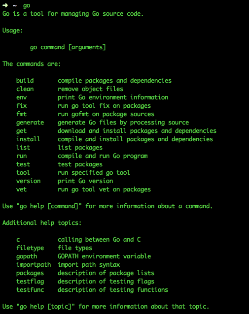

1.1 Go 安装
Go的三种安装方式
Go有多种安装方式，你可以选择自己喜欢的。这里我们介绍三种最常见的安装方式：
- Go源码安装：这是一种标准的软件安装方式。对于经常使用Unix类系统的用户，尤其对于开发者来说，从源码安装可以自己定制。
- Go标准包安装：Go提供了方便的安装包，支持Windows、Linux、Mac等系统。这种方式适合快速安装，可根据自己的系统位数下载好相应的安装包，一路next就可以轻松安装了。推荐这种方式
- 第三方工具安装：目前有很多方便的第三方软件包工具，例如Ubuntu的apt-get、Mac的homebrew等。这种安装方式适合那些熟悉相应系统的用户。
最后，如果你想在同一个系统中安装多个版本的Go，你可以参考第三方工具GVM，这是目前在这方面做得最好的工具，除非你知道怎么处理。
Go源码安装
在Go的源代码中，有些部分是用Plan 9 C和AT&T汇编写的，因此假如你要想从源码安装，就必须安装C的编译工具。
在Mac系统中，只要你安装了Xcode，就已经包含了相应的编译工具。
在类Unix系统中，需要安装gcc等工具。例如Ubuntu系统可通过在终端中执行sudo apt-get install gcc libc6-dev来安装编译工具。
在Windows系统中，你需要安装MinGW，然后通过MinGW安装gcc，并设置相应的环境变量。
你可以直接去官网下载源码，找相应的goVERSION.src.tar.gz的文件下载，下载之后解压缩到$HOME目录，执行如下代码：
cd go/src
./all.bash
运行all.bash后出现"ALL TESTS PASSED"字样时才算安装成功。
上面是Unix风格的命令，Windows下的安装方式类似，只不过是运行all.bat，调用的编译器是MinGW的gcc。
如果是Mac或者Unix用户需要设置几个环境变量，如果想重启之后也能生效的话把下面的命令写到.bashrc或者.zshrc里面，
export GOPATH=$HOME/gopath
export PATH=$PATH:$HOME/go/bin:$GOPATH/bin
如果你是写入文件的，记得执行bash .bashrc或者bash .zshrc使得设置立马生效。
如果是window系统，就需要设置环境变量，在path里面增加相应的go所在的目录，设置gopath变量。
当你设置完毕之后在命令行里面输入go，看到如下图片即说明你已经安装成功

图1.1 源码安装之后执行Go命令的图
如果出现Go的Usage信息，那么说明Go已经安装成功了；如果出现该命令不存在，那么可以检查一下自己的PATH环境变中是否包含了Go的安装目录。
关于上面的GOPATH将在下面小节详细讲解
Go标准包安装
Go提供了每个平台打好包的一键安装，这些包默认会安装到如下目录：/usr/local/go (Windows系统：c:\Go)，当然你可以改变他们的安装位置，但是改变之后你必须在你的环境变量中设置如下信息：
export GOROOT=$HOME/go
export GOPATH=$HOME/gopath
export PATH=$PATH:$GOROOT/bin:$GOPATH/bin
上面这些命令对于Mac和Unix用户来说最好是写入.bashrc或者.zshrc文件，对于windows用户来说当然是写入环境变量。
如何判断自己的操作系统是32位还是64位？
我们接下来的Go安装需要判断操作系统的位数，所以这小节我们先确定自己的系统类型。
Windows系统用户请按Win+R运行cmd，输入systeminfo后回车，稍等片刻，会出现一些系统信息。在“系统类型”一行中，若显示“x64-based PC”，即为64位系统；若显示“X86-based PC”，则为32位系统。
Mac系统用户建议直接使用64位的，因为Go所支持的Mac OS X版本已经不支持纯32位处理器了。
Linux系统用户可通过在Terminal中执行命令arch(即uname -m)来查看系统信息：
64位系统显示
x86_64
32位系统显示
i386
Mac 安装
访问下载地址，32位系统下载go1.4.2.darwin-386-osx10.8.pkg，64位系统下载go1.4.2.darwin-amd64-osx10.8.pkg，双击下载文件，一路默认安装点击下一步，这个时候go已经安装到你的系统中，默认已经在PATH中增加了相应的~/go/bin,这个时候打开终端，输入go
看到类似上面源码安装成功的图片说明已经安装成功
如果出现go的Usage信息，那么说明go已经安装成功了；如果出现该命令不存在，那么可以检查一下自己的PATH环境变中是否包含了go的安装目录。
Linux 安装
访问下载地址，32位系统下载go1.4.2.linux-386.tar.gz，64位系统下载go1.4.2.linux-amd64.tar.gz，
假定你想要安装Go的目录为 $GO_INSTALL_DIR，后面替换为相应的目录路径。
解压缩tar.gz包到安装目录下：tar zxvf go1.4.2.linux-amd64.tar.gz -C $GO_INSTALL_DIR。
设置PATH，export PATH=$PATH:$GO_INSTALL_DIR/go/bin
然后执行go

图1.2 Linux系统下安装成功之后执行go显示的信息
如果出现go的Usage信息，那么说明go已经安装成功了；如果出现该命令不存在，那么可以检查一下自己的PATH环境变中是否包含了go的安装目录。
Windows 安装
访问Google Code 下载页，32 位请选择名称中包含 windows-386 的 msi 安装包，64 位请选择名称中包含 windows-amd64 的。下载好后运行，不要修改默认安装目录 C:\Go\，若安装到其他位置会导致不能执行自己所编写的 Go 代码。安装完成后默认会在环境变量 Path 后添加 Go 安装目录下的 bin 目录 C:\Go\bin\，并添加环境变量 GOROOT，值为 Go 安装根目录 C:\Go\ 。
验证是否安装成功
在运行中输入 cmd 打开命令行工具，在提示符下输入 go，检查是否能看到 Usage 信息。输入 cd %GOROOT%，看是否能进入 Go 安装目录。若都成功，说明安装成功。
不能的话请检查上述环境变量 Path 和 GOROOT 的值。若不存在请卸载后重新安装，存在请重启计算机后重试以上步骤。
第三方工具安装
GVM
gvm是第三方开发的Go多版本管理工具，类似ruby里面的rvm工具。使用起来相当的方便，安装gvm使用如下命令：
bash < <(curl -s -S -L https://raw.githubusercontent.com/moovweb/gvm/master/binscripts/gvm-installer)
安装完成后我们就可以安装go了：
gvm install go1.4.2
gvm use go1.4.2
也可以使用下面的命令，省去每次调用gvm use的麻烦： gvm use go1.4.2 --default
执行完上面的命令之后GOPATH、GOROOT等环境变量会自动设置好，这样就可以直接使用了。
apt-get
Ubuntu是目前使用最多的Linux桌面系统，使用apt-get命令来管理软件包，我们可以通过下面的命令来安装Go，为了以后方便，应该把 git mercurial 也安装上：
sudo apt-get install python-software-properties
sudo add-apt-repository ppa:gophers/go
sudo apt-get update
sudo apt-get install golang-stable git-core mercurial
homebrew
homebrew是Mac系统下面目前使用最多的管理软件的工具，目前已支持Go，可以通过命令直接安装Go，为了以后方便，应该把 git mercurial 也安装上：
brew update && brew upgrade
brew install go
brew install git
brew install mercurial
links
- 目录
- 上一节: Go环境配置
- 下一节: GOPATH 与工作空间